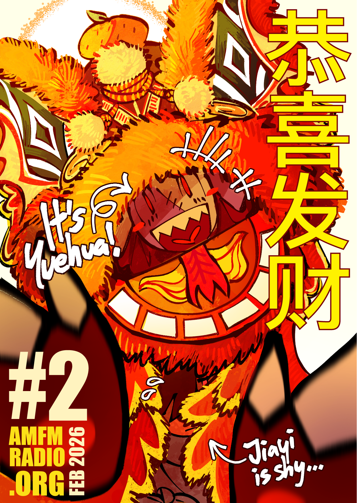
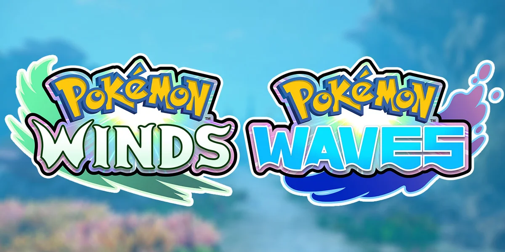
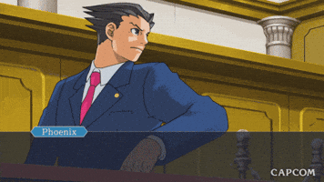
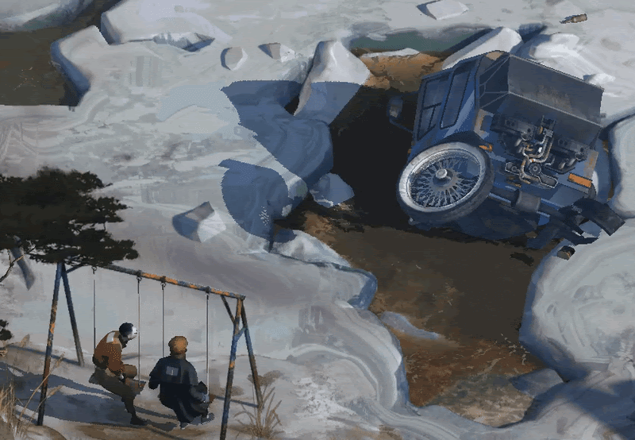

[2026/02/30]
Februari 2026

Happy Lunar New Year!
I honestly don’t have much to say for this holiday. I didn’t celebrate it this year (I don’t celebrate holidays very seriously it feels like), I didn’t dress for the occasion (I have no suitable clothes nor do I want to spend money on any), and I don’t even know if my relatives gave me any money (I didn’t ask for any, which was kind of really stupid of me. I try too hard to be self-sufficient).
I can tell you that I got one small little win: I asked my boss for one day of PTO on the 17th and he allowed it. I spent that day playing video games and drinking beer.
Maybe you guys had a better lunar new year than I did; at least, this one was comparatively better than the one I had last year, which I didn’t celebrate because I was the sickest I have been in my entire life. I remember I spent a few days just half dead and completely bedridden. My cousin was whatsapping me asking where I was and for stranding her at the family function. It was not good.
I am happy to announce that I was in fact
not sick during my PTO! I only got sick
after it! Great! Not that great actually. I caught a cold. Or a flu or something. I don’t know the difference between the two. I’m just coughing, sneezing and sniffly. I had to stay home for the past few days, and I’m using all my energy I have right now to write this blog post and draw the monthly cover, so please appreciate my efforts.
If you don’t celebrate the lunar new year, then I would like to wish a happy Valentine’s to you! I think this holiday isn’t solely for celebrating romantic relationships. I’m a little bit of a lonely person, so this year I wrote a lot of my friends' valentines letters. I shipped them out early hoping they would arrive on time. They did, thankfully. It made a bunch of them happy, which in turn made me happy too. I feel like it’s important to let your friends know you love and care for them a lot. I do this thing where I just randomly let people know that, but sometimes I worry if it comes off wrong and it sounds like I’m 5 steps away from killing myself (that sort of thing where people say they love each other before they die). It’s kind of funny, in a way. A little sad, maybe.
Other than LNY and Valentine’s, I didn’t do much this month. Too busy working. Here’s an interesting thing to talk about(?): I gave myself a haircut this month. Rather than just cutting my hair at random points and hoping it looks good, I actually followed a video tutorial this time (thank you gay men on youtube).
I’m glad I saved myself a lot of money from not going to a salon, but every single time I attempt to cut my own hair, I end up with multiple cuts on my hands. I have to use big bulky kitchen scissors (who has the time or money to get haircutting scissors?) and I kept stabbing myself because my only point of reference was staring at myself in a mirror while doing it. It’s strange to have to gauge whether my hand was going to go left or right, or up or down. At least when the zombie apocalypse happens, I’ll know how to cut my own hair and have it look good enough. I’ll have to worry about finding a mirror and scissors though.
Cutting your own hair is fun, you allow yourself more autonomy over your appearance, and you don’t have to stress about needing someone else to do it for you and fucking it up. I think everyone should try cutting their own hair at least once.
Pokémon turns 30 this month! Happy birthday to the franchise that I hold very closely to my heart!

I’ve been following Centroleaks for a while now and Pokemon Winds and Waves didn’t come as a surprise to me. The starters though... I think they’re ugly. Browt is really just a downgraded Rowlet, and Gecqua and Pombon didn't really catch my attention. My friend said that the human character designs gets better and better with every gen but the pokémon designs kind of get worse and worse, and I’m inclined to agree; I don’t like how pug-ified first-evo pokémon look nowadays, and how final-evo pokemon get human-like personalities. I wish they’d hire better monster designers or something… But if the Gen 1 starters were released today, then they’d no doubt get clowned on too. I guess you can’t really please Pokémon fans, myself included.
At least they’re trying to fix the environment textures and they’re not (completely?) going back to the really ugly Scarlet Violet artstyle... But man, the new trainers really have no drip at all. They put their whole pussy into the Legends ZA trainer designs. Regarding all of the designs... I think it’s really just the fault of the insane crunch-time deadlines being imposed on Gamefreak employees (I wish they would unionize already, but I doubt that kind of thing happens in Japan), so you can’t blame them. I wish that capitalism would stop forcing Pokémon to churn out games at the speed of light and actually take the time to make the perfect polished game. Honestly, they could take 5+ years to work on a new Pokémon game, and I wouldn’t mind at all.
I’m happy the new map/region is based on Indonesia…! You never see the country mentioned or referenced in anything ever. I have not met a single person outside of SEA who even knows Indonesia exists, and for those that actually do know about it, they just tell me about their future Bali itinerary, which I do not give a single flying fuck about.
It came as a huge shock to me when the leaks revealed that the new region is gonna be based on my country. The insane advertising they’re doing for the franchise and the TCG in Jabodetabek is already crazy to me, but to base a whole mainline game region off it is something I couldn’t have imagined as a kid… I can only hope that the games are good. If they end up being ScarVio 2, then I’d lose all hope on Pokemon and just completely drop it or something. Maybe then I can finally save money by not buying expensive merch all the time.

Enough Pokémon... Let’s talk about other video games! I pirated the original Ace Attorney trilogy on my homebrewed 3DS on a whim. I’m still at the beginning of the first game, but I’m hoping to enjoy it. So far, it’s making me feel pretty dumb. I don’t think I’veneeded to rack my brain as hard as this over a video game. It’s a new experience!

I’m also trying to play through Disco Elysium properly and see it through to the end. No spoilers!! I don’t know what will happen to the hanged man or if the mystery will even be solved by the end of the game. I’m just having fun picking the most communist dialogue options possible. I get really scared of pissing Kim off sometimes. I want Harry and Kim to be married happily ever after. They are like my two gay dads.
I unfortunately didn’t have much planned for my website this month (and the next few months). Sorry…
Regarding my shop, I made a list recently of sticker designs I would like to make, but it’s gonna be a while until I find the time for all of that. It’s just sitting in my to-do list for now. Anyway, I’m happy that a lot of people have been buying my stuff; it’s been a lot more consistent and a little less stressful than doing commissions. I want to keep making art for a long time and I’m happy to know it’s at least a bit profitable. Maybe one day I’ll make a blog post about running a shop if people are interested in that.
That's all for this month. Thank you for reading!